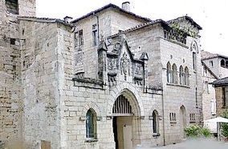
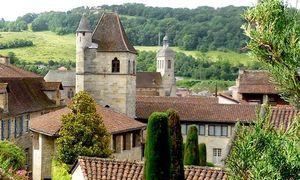
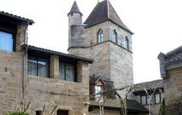
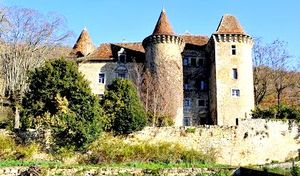
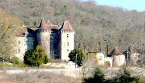
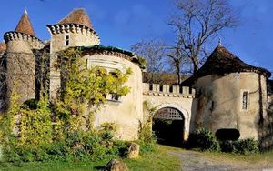
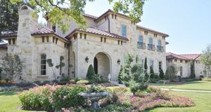

Recensement Jean-Claude Truffet
| Département | 46 — Lot |
| Canton | Figeac |
| Commune | Figeac |
| Type d'édifice | Patrimoine |
| Période d'origine | XIV-XVI |







FIGEAC, le château de Figeac, de Ceint-d'Eau, du Viguier du Roi, de Tuscan, (voir article suivant) SAINT-DEAU, la première mention d'un seigneur de Saint-Dau, nommé Pierre de Cayron, remonte à 1559 : le château n'est probablement pas plus ancien. Gabriel de Cayron est seigneur de Saint-Dau en 1565, et en 1580 le château est assiégé par les protestants , sans que l'on sache dans quelle mesure cet événement a pu affecter l'édifice, il faut probablement attribuer à Pierre de Cayron la construction du château dans la première moitié du XVIe siècle. La fille de Gabriel de Cayron, Catherine épouse François de Boisset de la Salle avant 1602 ; elle meurt en 1631 et son mari l'année suivante. Entre temps, le 16 mars 1631, a été fondée la chapellenie de Saint-Dau, avec une chapelle aménagée au premier niveau de la tour sud. Le 18 juillet 1636, le château est vendu à Jean Vignes, bourgeois et garde des sceaux de Figeac, puis il passe à François Dumont vers 1650. Après un partage survenu le 16 juin 1723, le château est la propriété du prêtre Exupère de Blanchefort de Pause, puis celle de son neveu Jean-Jacques Lombard. Ce dernier le vend le 30 septembre 1749 à François Guary. Le nom de Ceint-d'Eau a remplacé le nom d'origine après la Révolution. VIGUIER du ROI, château avec sa façade classé, au coeur de la cité Médiévale de Figeac, constitue un heureux mariage de sept siècles darchitecture, depuis le XIIe siècle, dominé par sa tour, construite en 1302. Les intérieurs sont décorés en concordance avec lépoque des constructions : Gothique pour la Tour du Roy, Louis XV avec ses parquets et boiseries dépoque rehaussées dor, rédiévale avec ses coussièges, Romantique avec ses poutraisons apparentes, ainsi que Renaissance avec sa cheminée monumentale en pierre, transformé en hôtel restaurant.
FIgeac, dans le centre historique de la cité médiévale de Figeac, les promeneurs sarrêtent forcément devant le château du Viguier du Roy. Cet édifice, qui date des XIVe et XVIIIe siècles, a été construit sous Philippe IV Le Bel, à partir de différents bâtiments dont le plus ancien remonte au XIIe siècle. Lensemble de 5 000 m2, en parfait état, occupe la quasi-totalité dun quartier du centre-ville et donne sur la place Champollion, actuellement aménagé en un hôtel-restaurant 4 étoiles Saint-D'Eau, cette belle demeure date du début du XVIe siècle. Des dispositions générales sont encore médiévales , corps de logis flanqué de tours rondes, mâchicoulis, mais les fenêtres à meneaux ont des profil Renaissance, les lucarnes à frontons triangulaires. Le château fut remanié plusieurs fois. Son nom conduirait à penser qu'il est entouré d'eau, il n'en ai rien, le bâtiment est sur une sorte d'éminence, il tient son nom du village. Le château est agrandi au nord-est dans le style néo-Renaissance et les ouvertures de l'élévation nord sont remaniées vers 1920. Les culots d'une fenêtre de la tour sud-ouest portent les armes de la seule famille de Cayron : Les armoiries représentées sur les cheminées permettent d'attribuer à Catherine de Cayron et à François Boisset de la Salle l'achèvement ou le remaniement des corps de logis, à la fin du XVIe siècle ou au début du XVIIe siècle.
Famille de Gabriel de Cayron
"
Figeac château la Balène gravure 1, le Viguier du Roy gravure 2-3 , le Saint-d'eau gravure 4, 5,6, de Tuscan gravure 7 à Figeac